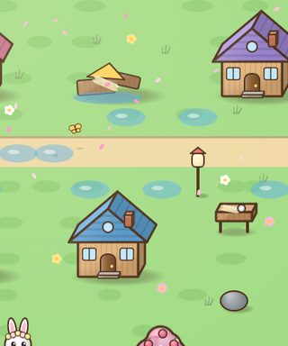

Wish you were here. Bring a hard hat.
The brook took two more houses last night. We hear you used to study dams. There's a fridge box waiting, a bear in cardboard armour, and fourteen chapters of homes to put back.
Love, everyone in Blossom Hollow

1¢- To
- Anyone who used to love building things
- Deliver to
- Your browser. Nothing to install.